Os elementos de um arquivo HTML são criados com uma tag de abertura e uma de fechamento, feitas com uma palavra reservada entre colchetes angulares "< >"
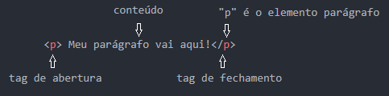Meu parágrafo vai aqui!
No exemplo acima, vemos uma tag de parágrafo, onde o navegador, ao ler essa tag, saberá que todo o conteúdo dentro dela deve ser mostrada como um parágrafo, atribuindo as formatações padrões para este. Note que a tag de fechamento é criada com uma “/”, indicando ao navegador o fim do paragrafo e deste conteúdo.
Uma observação antes de seguir: para criar qualquer tag, digite apenas a palavra reservada, por exemplo, "p" e digite tab ou enter. Será criado, automaticamente, a tag completa, caso esteja utilizando um editor de código.
Tags são utilizadas para hierarquizar a informação:
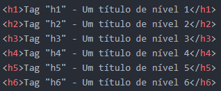Observação: as tags h1 à h6 não devem ser usadas para definir tamanho do texto. Devem ser usadas apenas para hierarquizar.
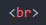A tag "br" (break row) é uma tag utilizada para pular uma linha.
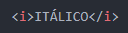ITÁLICO - A tag "i" serve para deixar o texto em itálico. Trata apenas o visual, sem nenhuma carga semântica.
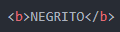NEGRITO - A tag "b" serve para deixar o texto em negrito. Também apenas visual , sem carga semântica.
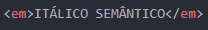ITÁLICO SEMÂNTICO - A tag "em" serve para dar ênfase ao conteúdo, mas o navegador o coloca em itálico.

NEGRITO SEMÂNTICO - A tag "strong" também serve para dar ênfase ao conteúdo e o navegador o coloca em negrito.
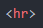A tag "hr" (horizontal row) cria uma linha na tela, como essa abaixo.
Lista não ordenada (unordered list):
Utilize "ul" para criar uma lista não ordenada. Para criar os itens da lista, utilize "li" .
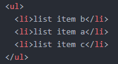Lista Ordenada (ordered list):
Utilize "ol" para criar uma lista ordenada. Para criar os itens da lista, utilize "li".
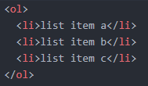Imagem:
Para criar imagens como essas utilizadas nesse projeto, utilize "img".
Você deverá colocar o diretório, separado por "/", seguido do nome do arquivo e a sua extensão, como por exemplo: ".png".
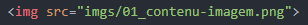Note que, para a imagem utilizada, tenho apenas a pasta "imgs". Isso porque a minha pasta de imagens "imgs" está na pasta raiz, onde se encontra esse arquivo html.
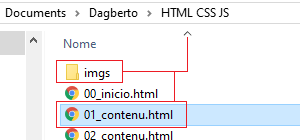Caso, a pasta "imgs" esteja em uma pasta fora da pasta raiz do html, deve-se usar "../" para ir um nível antes, como se estivesse saindo da pasta.
Esse processo deve ser repetido, quantas vezes forem necessárias, até retornar a raiz da pasta "imgs", como por exemplo "../../imgs/nomedoarquivo.extensão"
Se a pasta "imgs" estiver contida em outras pastas, elas devem ser citadas, como por exemplo: "../../conteudo/imgs/nomedoarquivo.extensão"
Clique no link abaixo e conheça mais um conceito: o atributo.
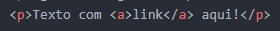Texto com link aqui!
Ou, você pode voltar!